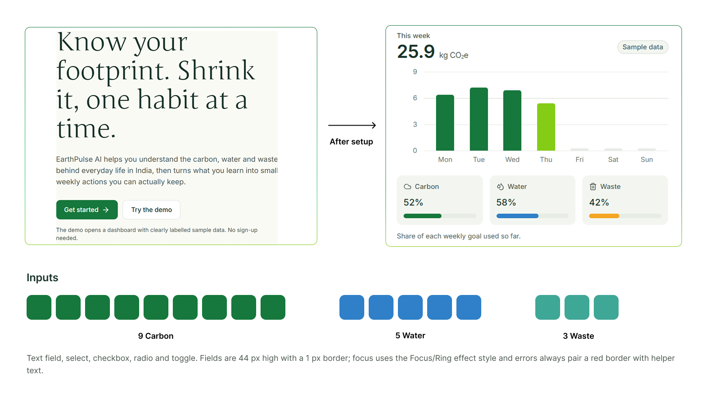
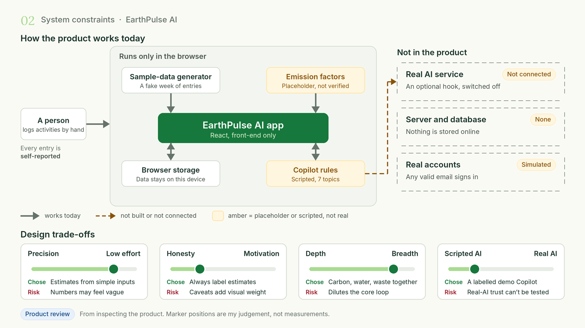
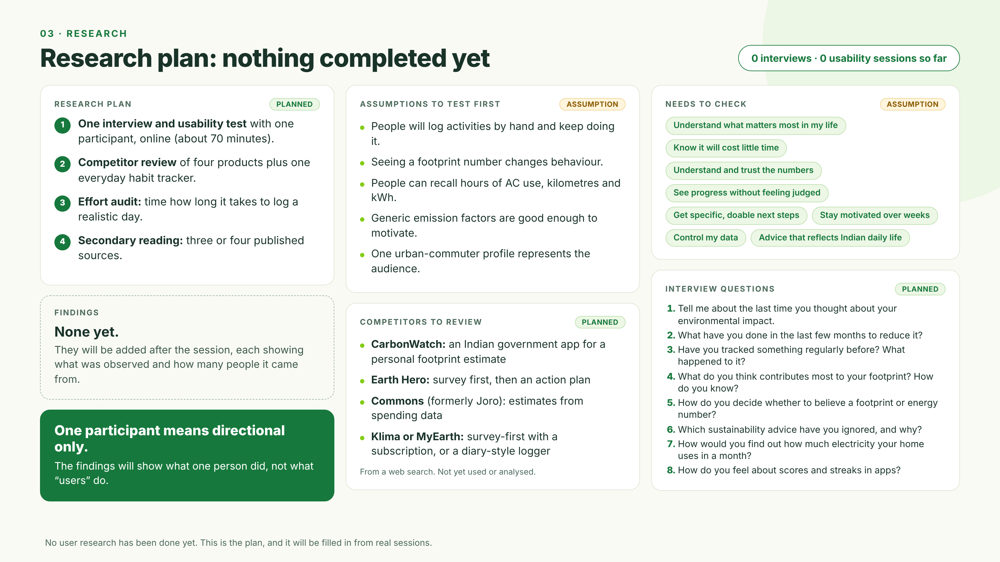
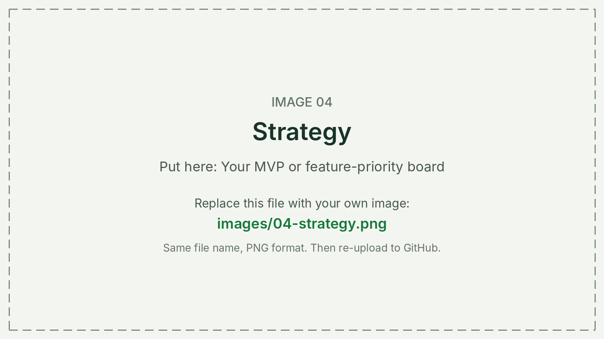
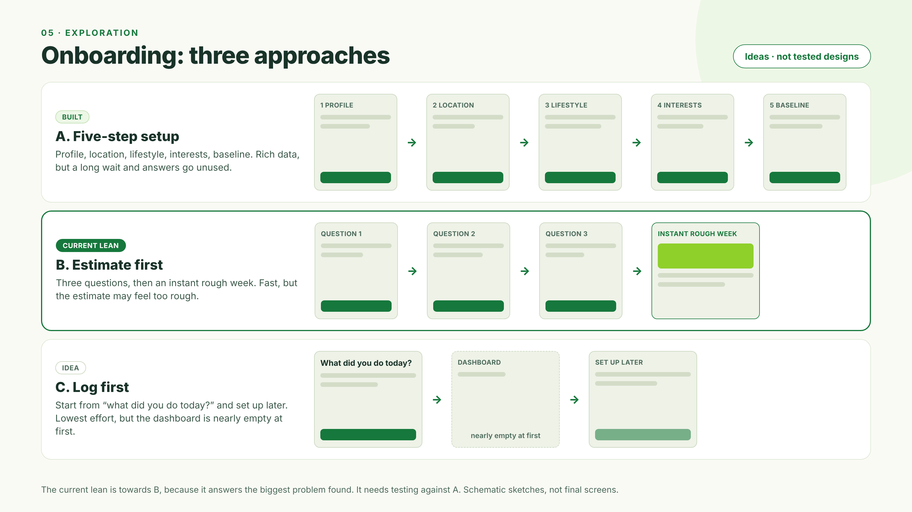
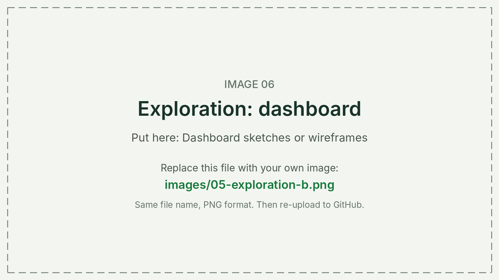
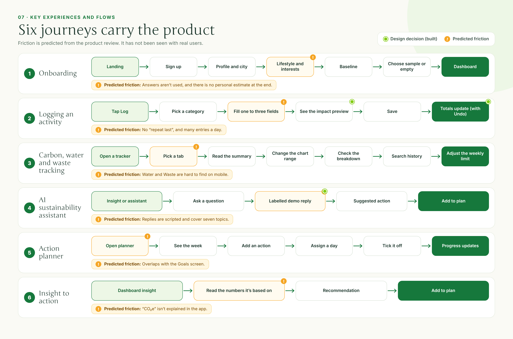
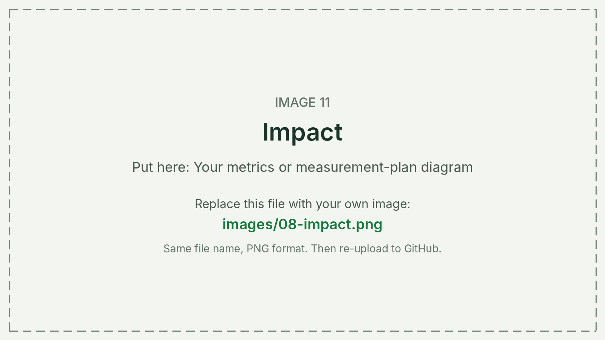
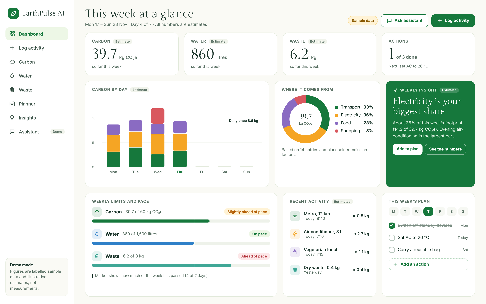
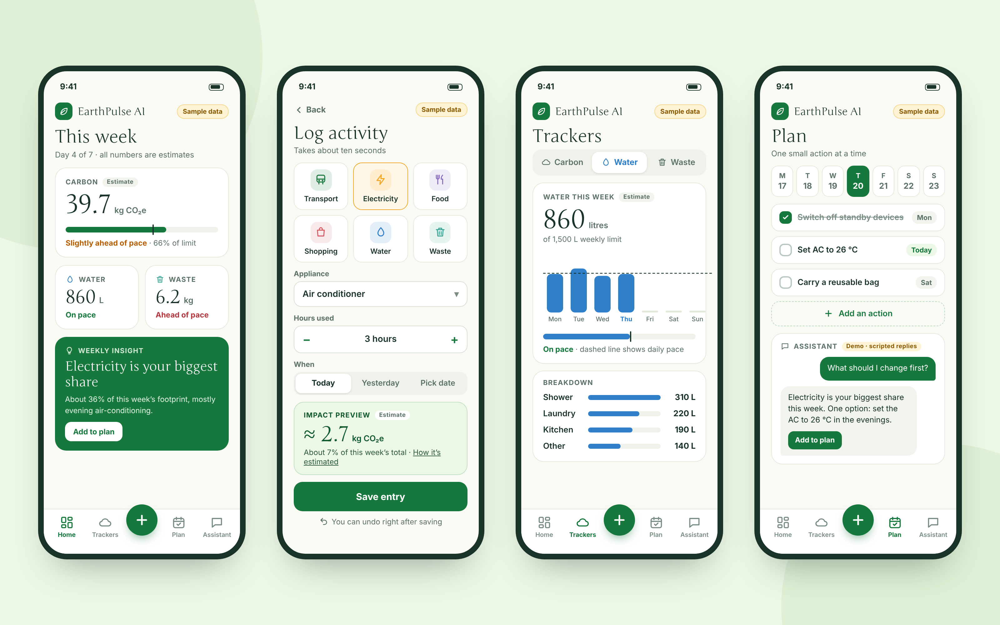

How this was made. The first working version of EarthPulse AI was generated with an AI assistant (Claude) from written briefs. This case study starts with a critical review of that version. (Edit this note so it says exactly what you did.)
How to read the labels. Assumption believed, not tested · Product review found by inspecting the product · Planned not done yet · Expected a hope, not a result · Built exists in the product. Nothing here comes from user research or testing, because none has been done yet.
01
Problem framing
People who want to live more sustainably struggle to see which of their habits matter, and what to change first.
Problem statement Assumption
Urban adults in India who want to live more sustainably have no quick, trustworthy way to see which of their everyday habits matter most, or to turn that knowledge into small changes they can keep.
Pain points Assumption
- I don’t know which of my habits has the biggest effect.
- Tracking everything is tedious, so I stop.
- Advice is vague. I don’t know what to do first.
- I can’t tell whether to trust a number I can’t check.
Problems in the first version Product review
- Onboarding asks about a dozen things the product never uses.
- New users don’t get a personal result at the end of setup.
- Sample data and a user’s own entries are added together.
- The sample day contains 17 entries, which is a lot to log by hand.
- Goals, plans and recommendations are spread over six screens.
How might we…
- …show a new person a believable first estimate within minutes?
- …make recording everyday activity take seconds?
- …help people understand, and sensibly trust, an estimate they can’t verify?
- …turn an insight into one small action that fits this person’s week?

02
System constraints
What the product can and can’t do today, and the trade-offs that follow.
Technical
- Front-end only: no server, no database
- Data is kept in the browser
- Sign-in is simulated
- English only
AI
- The assistant is scripted and covers seven topics
- A real model could state wrong things confidently
- Replies can’t cite sources yet
Data
- Emission and usage factors are placeholders, not verified
- Everything is self-reported
- No verified India-specific dataset yet
Business and research
- No business model yet
- One designer, about two working days for research
- One participant reachable, online only
Design trade-offs
- Precision vs effort: estimates from simple inputs, so numbers may feel vague.
- Honesty vs motivation: estimates are always labelled, which adds visual weight.
- Breadth vs depth: carbon, water and waste together, which dilutes the core loop.
- Scripted vs real AI: a labelled demo, so trust in real AI answers can’t be tested.

03
Research
No user research has been done yet. This section is the plan, and it will be filled in from real sessions.
Planned 0 interviews and 0 usability sessions completed so far.
Research plan Planned
- One interview and usability test with one participant, online (about 70 minutes).
- Competitor review of four products plus one everyday habit tracker.
- Effort audit: time how long it takes to log a realistic day.
- Secondary reading: three or four published sources.
With one participant, the findings are directional only. They show what one person did, not what “users” do.
Assumptions to test first Assumption
- People will log activities by hand and keep doing it.
- Seeing a footprint number changes behaviour.
- People can recall hours of AC use, kilometres and kWh.
- Generic emission factors are good enough to motivate.
- One urban-commuter profile represents the audience.
Competitors to review Planned
These names came from a web search. They have not been used or analysed yet.
- CarbonWatch: an Indian government app for a personal footprint estimate
- Earth Hero: survey first, then an action plan
- Commons (formerly Joro): estimates from spending data
- Klima or MyEarth: survey-first with a subscription, or a diary-style logger
Needs to check Assumption
Understand what matters most in my life · Know it will cost little time · Understand and trust the numbers · See progress without feeling judged · Get specific, doable next steps · Stay motivated over weeks · Control my data · Advice that reflects Indian daily life.
Interview questions Planned
- Tell me about the last time you thought about your environmental impact.
- What have you done in the last few months to reduce it?
- Have you tracked something regularly before? What happened to it?
- What do you think contributes most to your footprint? How do you know?
- How do you decide whether to believe a footprint or energy number?
- Which sustainability advice have you ignored, and why?
- How would you find out how much electricity your home uses in a month?
- How do you feel about scores and streaks in apps?
Findings
None yet. Findings will be added here after the session, each one showing what was observed and how many people it came from.

04
Strategy
A narrower product than the one first built.
Product vision Assumption
Help people in Indian cities see which everyday habits matter most for their footprint, and take one small, believable action each week.
Target user Assumption
- Urban adult in India, about 22 to 40
- Cares about sustainability, not an expert
- Has a regular commute
- Pays or shares an electricity bill
- Comfortable with English and apps
Not from research. Chosen to make a small study possible.
Core loop
Log → See → Understand → Act
Most of the first version sits in “log” and “see”. “Understand” and “act” are thinner.
MVP definition Expected
The smallest product that lets a new user get a believable personal estimate in minutes, log a day with little effort, understand one insight, and commit to one action.
Feature prioritisation (proposed)
Must
- Quick setup that ends in a first estimate
- Fast logging for transport, electricity, food
- One weekly insight and one action
- Estimates labelled, method visible
- Mobile-friendly, accessible controls
Should
- Water and waste tracking
- One merged weekly plan
- Repeat-last and saved commute
- Weekly recap
Could
- Real AI assistant
- What-if simulator
- Monthly reports and export
Won’t (for now)
- Social or community features
- Offsets or a marketplace
- Leaderboards
- Bank or UPI links
A proposal to test. Several of these features already exist in the first version, and the question is whether they belong in an MVP.

05
Exploration
Different ways to solve the two biggest problems: a setup that ends without value, and a dashboard that shows too much. These are ideas, not tested designs.
Onboarding: three approaches
A. Five-step setup Built
Profile, location, lifestyle, interests, baseline. Rich data, but a long wait and answers go unused.
B. Estimate first
Three questions, then an instant rough week. Fast, but the estimate may feel too rough.
C. Log first
Start from “what did you do today?” and set up later. Lowest effort, but the dashboard is nearly empty at first.
The current lean is towards B, because it answers the biggest problem found. It needs testing against A.
Dashboard: three layouts
- Dense overview (built): about twelve cards plus quick actions.
- Focus: one insight, one next action and a week strip.
- Journal: today’s log first, with small totals above.


Iterations
- v0 (built): the first working version.
- v1 (planned): onboarding that pays off, sample data separated, one plan concept, plain language.
- v2 (not defined): decided after testing, because that evidence doesn’t exist yet.
06
Design system
A calm, honest visual language for numbers people may not fully trust.
Principles
- Honest by default. Label estimates and sample data. Met
- Calm, not guilty. Reward progress, avoid blame. Partly
- One clear next step. Not yet
- Respect the effort budget. Every entry should take seconds. Not yet
- Accessible from the start. Partly
Colour
- Page
#FAFAF5 - Surface
#FFFFFF - Ink
#193329 - Brand green
#16783C - Brand tint
#EDF7E6 - Accent
#84CC16 - Water
#2F80C8 - Electricity
#F5A524 - Food
#8A6BC2 - Shopping
#D9585F - Waste
#3FA796
Typography
- Junge (serif) for display headlines
- Inter for all interface text
- 18 named styles: Display, Heading, Body, Label, Caption, Overline, Metric
- Minimum text size 12 px
Spacing, shape, components
- Spacing: 2, 4, 8, 12, 16, 20, 24, 32, 40, 48, 64, 96 px
- Corner radius: 4, 6, 10, 12, 20 px
- Buttons (4 types, 3 sizes), form fields, chips, badges, tabs, cards, charts
- Text and background pairs checked for WCAG AA contrast
Known inconsistencies Product review
- Spacing isn’t tokenised in code: 29 values sit off the scale.
- 21 colours are hard-coded instead of using tokens.
- The Figma file has no Sidebar, Activity row, Insight card or Action item.
- No documented grid or layout rules.
07
Key experiences and flows
Six journeys carry the product. The friction listed is predicted from the product review, and has not been seen with real users.
Onboarding
Landing → Sign up → Profile and city → Lifestyle and interests → Baseline → Choose sample or empty → Dashboard
Possible friction: answers aren’t used, and there is no personal estimate at the end.
Logging an activity
Tap Log → Pick a category → Fill one to three fields → See the impact preview → Save → Totals update (with Undo)
Possible friction: no “repeat last”, and many entries a day.
Carbon, water and waste tracking
Open a tracker → Pick a tab → Read the summary → Change the chart range → Check the breakdown → Search history → Adjust the weekly limit
Possible friction: Water and Waste are hard to find on mobile.
AI sustainability assistant
Insight or assistant → Ask a question → Labelled demo reply → Suggested action → Add to plan
Possible friction: replies are scripted and cover seven topics.
Action planner
Open planner → See the week → Add an action → Assign a day → Tick it off → Progress updates
Possible friction: overlaps with the Goals screen.
Insight to action
Dashboard insight → Read the numbers it’s based on → Recommendation → Add to plan
Possible friction: “CO₂e” isn’t explained in the app.

08
Impact
What success would look like and how it would be measured. Nothing has been measured yet, so there are no results here.
Expected outcomes Expected
- If a first estimate appears during setup, more new users should reach the dashboard with a number that is theirs.
- If logging has shortcuts, people should keep logging after the first week.
- If each estimate shows its basis, understanding and trust should improve.
- If goals and the planner become one idea, people should be able to explain how it works.
How it would be measured
- Time to a first personal insight (usability test)
- Seconds per entry and ease rating from 1 to 7 (effort audit, usability test)
- Understanding of the numbers: can the person explain them in their own words?
- Action taken after an insight (observation)
- Return after day 7 and day 30 (needs a live product)
Targets are set before each test, and results are reported with the number of people they came from.
Proposed north-star metric Assumption
Weekly active loggers who complete at least one action.
What this case study will not claim
- A reduction in anyone’s footprint
- Percentages from a sample of one
- That users prefer anything yet
- That the estimates are accurate

09
Solution
The product as it stands. A first version to learn from, not a finished answer.
Open the interactive prototype
The prototype is the live product. It opens with clearly labelled sample data.


Design decisions
- Estimates are always labelled, so placeholder numbers never look like measurements. Built
- Goal bars show pace: how much is used against how much of the week has passed. Built
- An impact preview before saving, plus Undo, instead of confirmation dialogs. Built
- One colour and icon per category, the same in charts, rows and forms. Built
- A labelled demo assistant, so it never poses as a live AI. Built
- Five-step onboarding. Flagged for redesign because the answers go unused. Product review
“Built” means it exists. None of these decisions has been validated with users yet.
Known problems
- Onboarding answers aren’t used
- No personal estimate after setup
- Sample and real data are mixed
- Heavy manual logging
- Unverified emission factors, scripted AI, no real accounts, no usability data
What happens next Planned
- Run the one-participant session and the effort audit
- Redesign onboarding around a first personal estimate
- Merge goals, planner and recommendations
- Separate sample data from a user’s own entries
- Re-test the same tasks and compare
What building it taught
- Automated tests caught a form that lost focus on every keystroke, which review had missed.
- A self-review found onboarding promising a personalised dashboard that never happened.
- Honest labels take space, so where they sit is a design decision.
These are lessons from the build and the review, not from users.